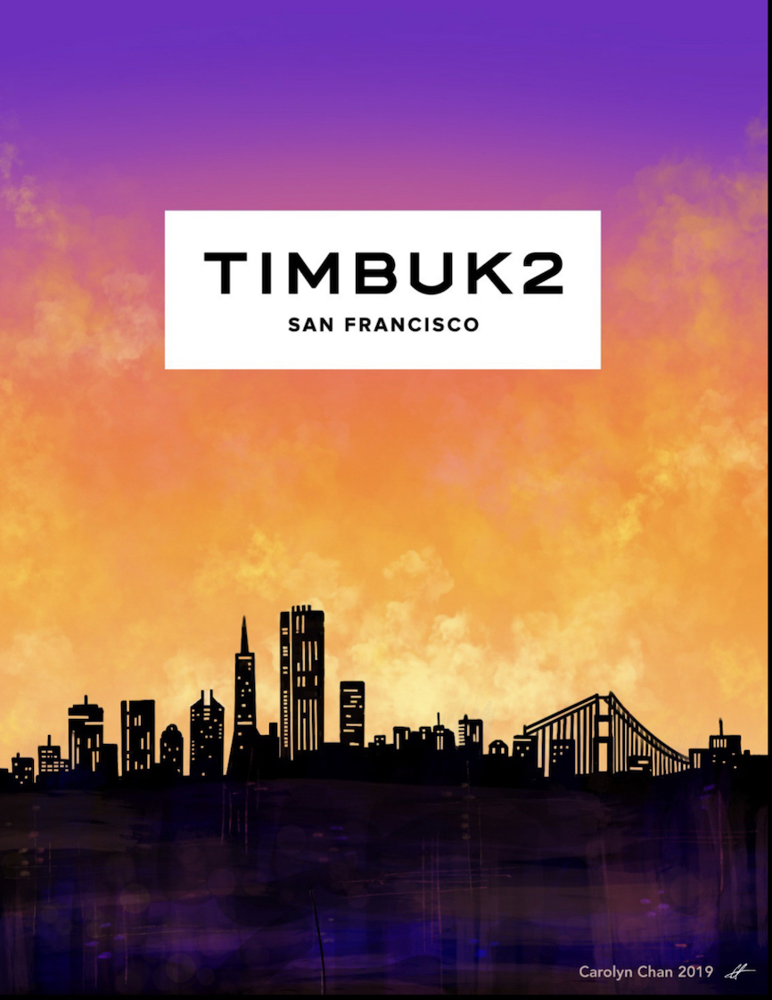
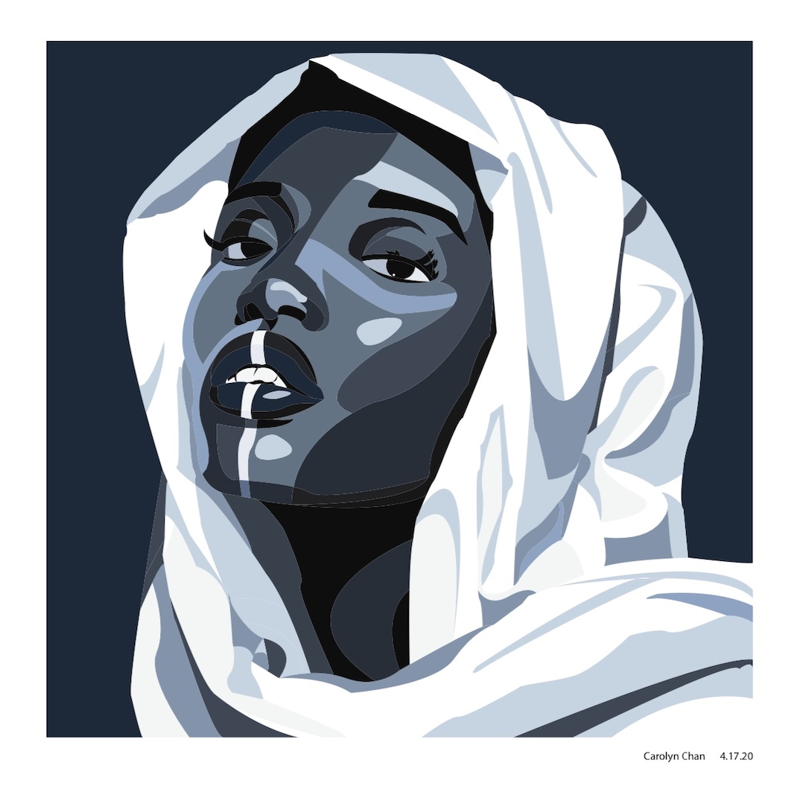

Some of my starting works in design were the woman in a white hijab created by
illustrator and the Timbuk2 commission. When I was practicing using illustrator,
I wanted to practice selecting colors and tools on the program, and this piece
really gave me a better understanding of how to use illustrator and utilize the
program for some of the works I do now. The Timbuk2 commission is a financial report
cover for the San Francisco division during the summer after my high school senior year.
Using my visual arts background, I practiced creating this work digitally and I learned
how different it was from drawing on traditional mediums compared to a device. Going
digital gives me so many opportunities and options to choose from medium-wise, but it
is also important to utilize them well without overdoing it. In this photo, I traced
the linework of a model to create a vector drawing using Live Paint on Illustrator. I
picked a limit of 10 colors from the image to use on the model in order to maintain a
consistent theme. Then I would fill the lines completely with one color to create the
clean shadows and lines that is seen in the photo.
